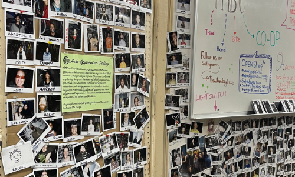

HOW TO BECOME A COORDINATOR
Be the shop you want to see! Coordinators are responsible for opening/closing the shop, managing volunteers, and running the register. Behind the scenes, Coordinators run social media, order inventory, write grants, and work with other community organizations

To become a coordinator, here's what you need to do:
- Be a member and log 20+ total volunteer hours.
- Have a current Coordinator sponsor your candidacy. They will answer your questions and reach out to others to gauge their support.
- Attend a Coordinator meeting to introduce yourself, meet any unfamiliar Coordinators, and answer questions. Afterwards, get elected unanimously to be a trial Coordinator.
- Get access to administrative and communication channels and complete a trial month of shadowing other Coordinators.
- Be affirmed at the next meeting as a full Coordinator, or have your trial period extended as necessary.